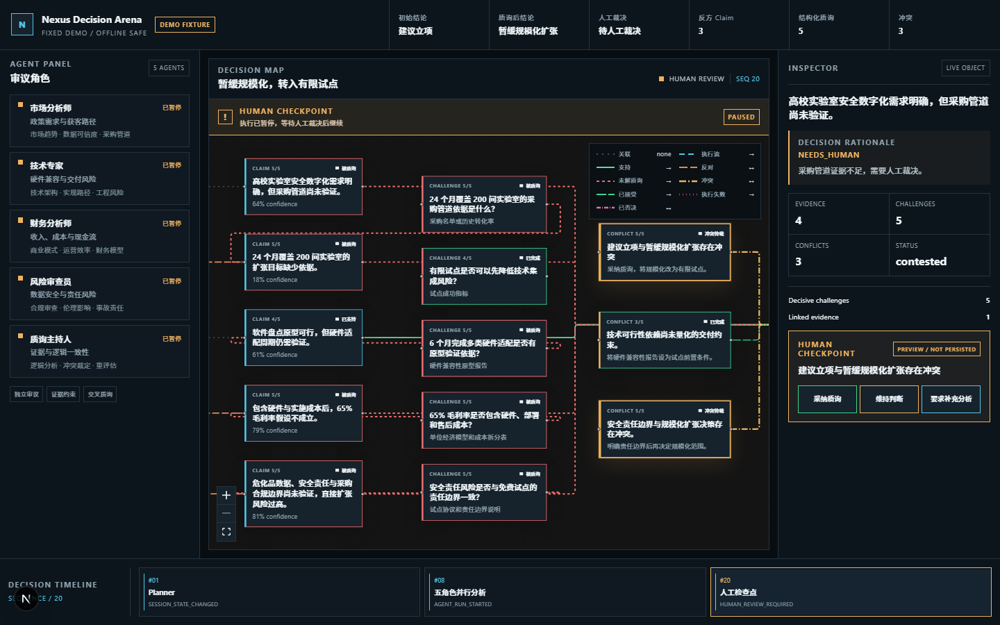
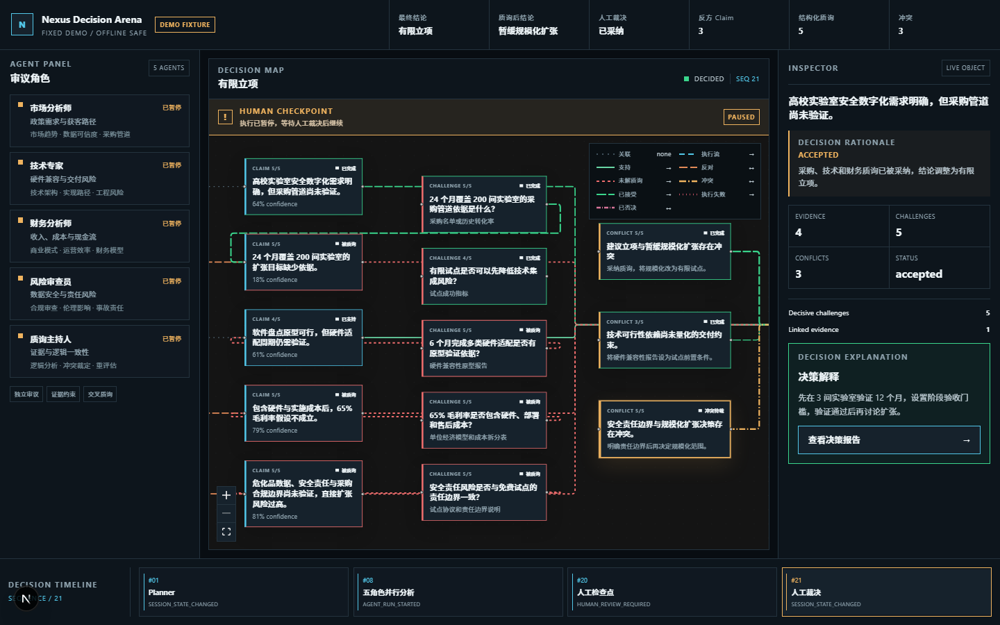
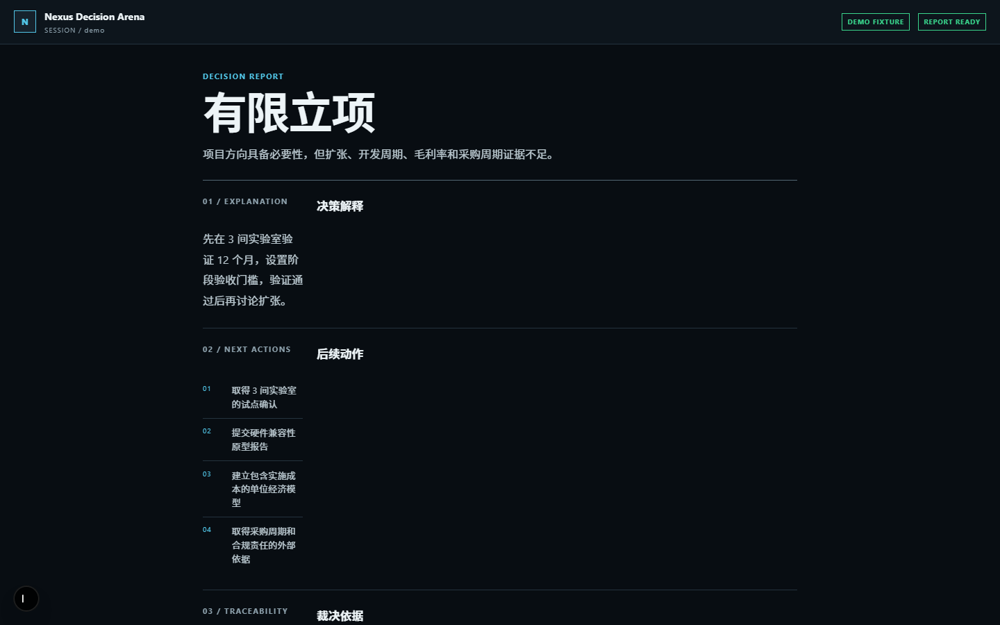
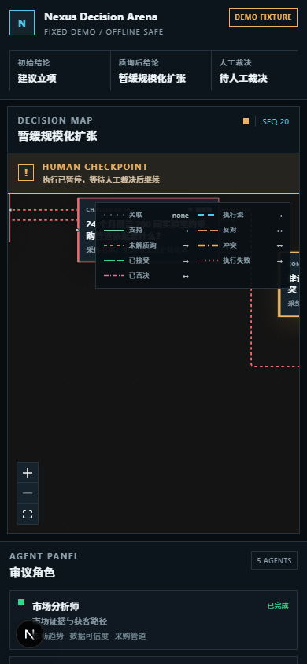
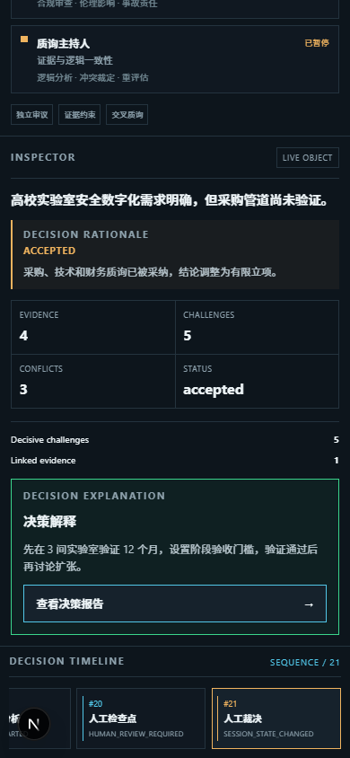

Nexus Decision Arena 不是通用 Agent 工作流编辑器，而是一个受约束的高价值决策评审引擎。 它围绕“独立分析 → 交叉质询 → 冲突检测 → 人工裁决 → 可回放报告”建立闭环。
普通多 Agent 系统常把不同角色的自由文本回答并排展示，缺少可比较的断言、定向质询、未解决分歧的 结构化记录和结论变化的证据链。评委或使用者只能看到“很多观点”，无法快速判断哪些结论值得相信。
系统把 Agent 输出约束为 Claim、Evidence、Challenge、Conflict 等结构化领域对象。Planner、 质询分配、状态迁移和冲突规则由确定性代码执行；LLM 只在受控边界内生成领域对象和语义判断。
| 类别 | 基线或文件 | 用途 |
|---|---|---|
| 代码与提交 | main / feature/decision-arena | 完整历史、可访问性、分支复核 |
| 设计冻结 | docs/superpowers/specs/2026-09-10-decision-arena-design.md | 产品边界、协议和数据契约 |
| 架构说明 | docs/architecture/system-overview.md | 组件、事件、数据库和 correlationId 规则 |
| 复现指南 | README.md | 10 分钟环境配置与启动路径 |
| AI 对话导出 | docs/ai-history/0016-codex-conversation-export.md | 可读的对话快照 |
| 结构化导出 | docs/ai-history/exports/codex-session-curated.jsonl | 100 条去噪消息的机器可读记录 |
| 核心 Prompt 链 | docs/ai-history/0017-core-prompt-chains.md | 三次核心迭代的纠偏与修复过程 |
| 稳定性原始输出 | docs/experiments/stability-output.txt | 80/80 Playwright 用例原始结果 |
AI 历史导出使用仓库内的 scripts/export-codex-history.ps1 生成。原始 Codex Desktop
会话 JSONL 的 SHA-256 快照记录为
e90dcc18135e4b9a8a5a67246197e0b9b2e95a47dc39bc8b8b01e6aaa13ae098。
决策评审的困难不等于“缺少观点”，而在于观点之间缺少可核验的比较关系。一个可用的 AI 评审系统必须能够回答：
| 维度 | 常见多 Agent 展示 | Nexus 的约束 |
|---|---|---|
| 核心对象 | 节点、边、自由文本消息 | Claim、Evidence、Challenge、Conflict |
| 观点关系 | 并列展示，依赖阅读者归纳 | 结构化关系与定向质询 |
| 流程控制 | 节点自由拼装 | 固定状态机和确定性规则 |
| 结论产生 | 模型直接输出最终答案 | 系统建议，人类最终裁决 |
| 可复现单位 | 代码或一次输出 | 完整决策过程链 |
首版不实现通用工作流画布、不开放无限节点编排、不自动完成高风险决策、不把业务规则写入 UI， 也不要求真实模型 API 才能运行固定 Demo。产品边界由设计冻结规格和测试共同约束。
高校实验室 AI 危化品库存与安全预警平台，包含二维码盘点、图像识别、补货预测、过期试剂预警和事故风险提示。
每间实验室每年 8 万元；24 个月覆盖 200 间实验室；取得 1600 万元 ARR；毛利率 65%；6 个月完成 MVP。
| 假设 | 质询方向 | 可能导致的变化 |
|---|---|---|
| 24 个月获得 200 间实验室 | 获客能力、采购周期、试点转化 | 从规模化扩张转为有限验证 |
| 6 个月完成硬件与算法集成 | 硬件依赖、数据采集、部署条件 | 追加技术验证门槛 |
| 毛利率达到 65% | 硬件成本、实施成本、售后服务 | 要求分阶段核算单位经济 |
| 高校采购周期不超过 90 天 | 预算、招标、验收与合规流程 | 降低首年收入预期 |
最终建议为先在 3 间实验室验证 12 个月，设置阶段验收门槛；验证通过后再讨论规模化扩张。 结论变化不是模型随机改写，而是由 Challenge、Conflict 和 HumanDecision 共同驱动。
DEMO FIXTURE。它用于稳定演示与测评，不伪装成真实模型调用；
live UUID 会话才走 Mock Mode orchestration 或真实模型 Provider。
系统保留五个一级 Agent，避免角色膨胀和概念堆叠。数据分析、运营、合规、伦理和逻辑分析作为角色内部 Lens 存在；运行、状态展示和推理记录仍以五个一级角色为单位。
AgentRole {
id, name, role, goal, perspective,
evaluationCriteria: string[],
evidenceRequired: string[],
conflictPreference: string[],
lenses: string[],
promptVersionId
}
| 组件 | 职责 | 为什么不由 LLM 主导 |
|---|---|---|
| Planner | 选择角色、生成任务、建立执行顺序 | 保证同输入同顺序和可测试性 |
| Conflict Detector | 比较立场、证据、版本和置信度 | 规则可审计，避免模型随意制造冲突 |
| Report Generator | 汇总已校验对象和人工裁决 | 报告只描述已发生的事实 |
Claim {
id: UUIDv7, sessionId, agentRunId, roleId, lens,
statement,
type: fact | assumption | prediction | recommendation,
stance: support | oppose | neutral,
importance: 1..5, confidence: 0..1,
evidenceIds: string[],
status: proposed | supported | contested | accepted | rejected,
rootClaimId, revisionOfClaimId?, revision,
relations: Array<{ targetClaimId, type }>,
respondsToChallengeId?, disposition?
}
| 约束 | 实现含义 |
|---|---|
| UUIDv7 | 全球唯一，同时具有时间排序特征；非 UUIDv7 会被 Schema 拒绝。 |
| 不可原地覆盖 | 实质修改创建新 Claim，通过 rootClaimId、revisionOfClaimId、revision 追踪版本。 |
| 关系有类型 | supports、contradicts、qualifies、depends_on，避免无类型 ID 数组。 |
| 接受门槛 | 重要 Claim 进入 accepted 前必须满足证据和高严重度质询约束。 |
Evidence {
id, sessionId, claimId,
kind: project_input | calculation | external_reference | assumption,
title, content, description, sourceRef?,
direction: supports | opposes,
reliability: 0..1,
verificationStatus: unverified | verified | rejected,
validityPeriod?: { from?, to? },
retrievedAt, createdBy, agentRunId?
}
Challenge {
id, sessionId, targetClaimId,
challengerRunId, challengerRoleId,
type: evidence_gap | logic_flaw | contradiction | feasibility | priority,
question,
context: { triggerClaimIds: string[], explanation },
requiredEvidence: string[],
severity: 1..5,
resolutionStrategy:
provide_evidence | revise_claim | withdraw_claim | human_decision,
status: open | answered | validating | resolved | unresolved,
responseClaimId?, correlationId
}
Conflict {
id, sessionId, claimIds, challengeIds,
type: evidence | logic | assumption | priority,
summary, severity: 1..5,
status: detected | human_review | resolved,
humanDecisionRequired,
resolutionSuggestion,
impactScope: {
analysisAreas: market | technology | finance | risk | operations[],
stakeholders: string[]
}
}
Challenge 的回应仍是新版本 Claim，不额外创造“回复消息”对象。这样版本链、证据和质询关系可以在 同一套领域模型中解释。
比较顺序固定，避免结果依赖模型调用顺序或偶然排序：
importance DESC → evidence coverage ASC → confidence ASC → assumption > prediction > recommendation > fact → UUIDv7 ASC
| 角色 | 优先质询 |
|---|---|
| 市场分析师 | 市场假设、需求证据缺口、规模口径 |
| 技术专家 | 技术可行性、依赖条件、实现周期 |
| 财务分析师 | 成本、收入、单位经济与现金流假设 |
| 风险审查员 | 合规、伦理和关键假设失效风险 |
| 质询主持人 | 逻辑矛盾、跨角色冲突和证据充分性 |
| 限制 | 值 | 目的 |
|---|---|---|
| 每轮目标 Claim | 最多 5 个 | 控制 Demo 时长与事件规模 |
| 每个 Claim 质询者 | 最多 2 个 | 保留对抗，避免重复轰炸 |
| 补充质询 | 最多 1 次 | 防止无限循环 |
| 单次模型调用 | 45 秒超时 | 避免长尾请求阻塞 |
| Repair Prompt | 最多 1 次 | 修复结构错误但不无限重试 |
记录 AGENT_RUN_FAILED，其他关键 Agent 继续运行。
只影响当前质询，不阻断其他 Challenge 分支。
先解析、再 Schema 校验，最后执行一次 Repair Prompt。
apps/web # Next.js 页面、组件、Decision Map 与浏览器状态 services/core # Workflow、Arena、API、SSE、Replay、Checkpoint packages/shared # 领域 Schema、状态机、DTO、ID 与事件视图 lib/db # Drizzle Schema、迁移、Repository、SQL View lib/llm # Mock 与 OpenAI-compatible Provider docs/ # 架构、AI 历史、实验、设计与投稿材料 scripts/ # Demo runner、稳定性测试、AI 历史导出
| 模块 | 职责 | 约束 |
|---|---|---|
| claim-selector | 按固定优先级选择 Claim | 纯规则，可单元测试 |
| challenger-assigner | 分配异角色质询者 | 不得自问自答 |
| cross-examination | 生成质询、回应和核验状态 | 单分支失败隔离 |
| conflict-detector | 根据 Claim / Challenge / 版本规则生成 Conflict | 高风险必须转人工 |
| decision-replay | 按事件序列恢复地图状态 | 共享给 Core 与 Web |
| inspector repository | 聚合 Claim、Evidence、Challenge、Conflict | 稳定 camelCase DTO |
operationalStatus 与领域阶段分离：ACTIVE、PAUSED、FAILED、COMPLETED。刷新后通过 phase、 operationalStatus 和事件序列恢复页面，避免把临时前端状态作为事实源。
ExecutionEvent {
id, sessionId, sequence, correlationId, traceId?,
type:
SESSION_STATE_CHANGED |
AGENT_RUN_STARTED | AGENT_RUN_COMPLETED | AGENT_RUN_FAILED |
CLAIM_CREATED |
CHALLENGE_CREATED | CHALLENGE_RESOLVED | CHALLENGE_FAILED |
CONFLICT_DETECTED | HUMAN_REVIEW_REQUIRED | SESSION_COMPLETED,
payload, occurredAt, promptVersionId?
}
GET /api/sessions/:sessionId/claims/:claimId/inspector
ClaimInspectorDTO {
claim,
evidence[],
challenges[]: { challenge, responseClaim? },
conflicts[],
provenance: { agentRun, promptVersion },
decisionRationale: {
outcome, summary, decisiveChallengeIds[],
evidenceIds[], humanDecisionId?
}
}
SQL View 完成必要 Join 和排序，Repository 映射稳定 DTO。前端不直接依赖数据库表或 View 结构， 减少多次请求并避免 UI 与数据库耦合。
HumanDecision {
id, sessionId, conflictId,
action: accept_challenge | uphold_claim | request_more_analysis,
rationale,
affectedClaimIds, affectedAgentRoleIds,
previousConclusion, newConclusion,
operatorId, createdAt
}
接受异议，推动修订或收敛为有限结论。
保留原结论，但必须记录 rationale 和影响。
进入一次受控补充轮，然后重新回到人工复核。
| 层 | 内容 | 控制目的 |
|---|---|---|
| 系统约束 | 角色、目标、评价标准、证据要求、冲突偏好、输出 Schema | 定义“允许生成什么” |
| 任务上下文 | 项目输入、当前阶段、目标 Claim、已有 Evidence、允许引用的 ID | 定义“本次要判断什么” |
| 修复上下文 | 失败原因、目标 Schema、错误路径、原输出摘要 | 定义“如何修正而不扩题” |
| 审计上下文 | correlationId、promptVersionId、模型参数摘要、事件 sequence | 定义“结果来自哪次调用” |
“让不同 Agent 互相质疑” → Claim 表示可质询断言 → Challenge 表示一次定向质疑 → 新版 Claim 表示回应 → 主持人核验 resolved / unresolved → Conflict 表示未解决分歧 → HumanDecision 表示最终裁决
interface LlmProvider {
generateStructured<T>(
input: LlmRequest,
schema: ZodSchema<T>,
signal: AbortSignal
): Promise<LlmResult<T>>
}
读取固定 fixture，返回确定性结构化对象。无外网、无模型 API 时可完成全流程。
通过服务端环境变量配置真实模型，结果经过同一套解析、校验和修复管线。
旧 Claim 不被改写。rootClaimId 连接版本链，revisionOfClaimId 指向被修订版本，respondsToChallengeId 指向触发修订的质询。Replay 因此可以展示“哪个论点在何时变化”。
| 工作单元 | correlationId | 追踪目标 |
|---|---|---|
| AgentRun | 运行级 ID | Prompt、Token、耗时、输出校验、相关 Claim |
| Challenge | 目标 Claim + challenger 的一次尝试 | created / resolved / failed 三类事件 |
| HumanDecision | HumanDecision.id | SESSION_STATE_CHANGED 与决策解释 |
| 角色 | 职责 | 不可让渡的边界 |
|---|---|---|
| 人类负责人 | 确定产品目标、约束范围、选择方案、最终验收 | 高风险结论、范围扩张、真实提交 |
| AI 设计协作者 | 分解需求、比较方案、生成契约、提出风险 | 不能自行改变比赛目标或声称未验证结果 |
| AI 编程协作者 | 实现模块、补测试、定位 Bug、整理证据 | 不能绕过架构规则或隐藏失败 |
| 独立复审 | 从边界、并发、安全和一致性重新检查 | 发现的问题必须回到测试和 Commit |
用户提出增加数据分析、运营、合规、伦理和逻辑分析角色。最终方案保留五个一级 Agent， 其余能力作为 Lens 内聚，避免复杂度失控。
AI 初版通过了基础测试，但复审发现事件对象可变、SSE 有丢事件窗口、幂等记录可能卡死。 这些风险被逐一转化为失败测试和修复 Commit。
可复现的不是单次模型文本，而是从输入、配置、Prompt、事件、领域对象到人工裁决和最终报告的完整决策过程。
| 固定项 | 仓库证据 |
|---|---|
| 项目输入 | fixtures/lab-safety-project.json |
| 预期报告 | fixtures/expected-final-report.json |
| 依赖版本 | package.json + pnpm-lock.yaml |
| 环境变量模板 | .env.example |
| 数据库迁移 | lib/db/migrations/0001..0004 |
| 模型模式 | LLM_MODE=mock 或 openai-compatible |
| 事件事实源 | execution_events + ExecutionEvent schema |
| 验证输出 | test、E2E、build、stability 原始记录 |
corepack pnpm demo:fixture。| 故障 | 系统行为 | 用户可见状态 |
|---|---|---|
| 真实模型 API 不可用 | 可切换 Mock Mode；固定 Demo 独立运行 | Provider 模式与 fixture 标识明确 |
| 单个 AgentRun 失败 | 记录 AGENT_RUN_FAILED，其他角色继续 | 失败节点与失败原因可见 |
| 单个 Challenge 失败 | 记录 CHALLENGE_FAILED，不阻塞其他质询 | 当前质疑标记失败或未解决 |
| 结构输出错误 | 解析和 Schema 校验，最多一次 Repair | 重试中或明确失败 |
| SSE 断线 | Last-Event-ID 或 after 补发事件 | 重连后状态恢复 |
| 并发重复写 | Idempotency-Key + lease fencing | 只应用一次结果 |
| 验证项 | 命令 | 结果 |
|---|---|---|
| 类型检查 | corepack pnpm typecheck | Shared / Web / DB / LLM / Core 全部通过 |
| 单元与集成测试 | corepack pnpm test | 156/156 通过 |
| E2E | corepack pnpm --filter @nexus/web test:e2e | 桌面与移动 4/4 通过 |
| 生产构建 | corepack pnpm --filter @nexus/web build | Next.js 15.5.25 通过 |
| 重复稳定性 | corepack pnpm test:stability | 80/80 Playwright 用例通过 |
| 离线 fixture | corepack pnpm demo:fixture | 到达 HUMAN_REVIEW，输出 12 Claims / 5 Challenges / 4 Conflicts / 36 Events |
注意分母的准确含义：命令使用 --repeat-each=20，项目为桌面与移动，每个项目有 2 个 E2E，
因此 2 × 2 × 20 = 80 个 Playwright 测试用例。文档不把 80 个用例误写成 80 个不同业务场景。
docs/experiments/stability-output.txt 记录命令、起止时间、退出码、完整 stdout/stderr 和最终
80 passed。



截图来源：artifacts/playwright/。同一组 Playwright 测试同时验证桌面和移动视口，
并检查关键区域几何重叠与最终结论。


| 指标 | 定义 | 当前状态 |
|---|---|---|
| 评审耗时 | 从输入提交到出现可审阅结论 | 实验计划已定义，人工基线与真实模型大规模运行未执行 |
| 风险发现数 | 初始风险与质询后新增风险数量 | fixture 计数已记录；统计口径需追加实验 CSV |
| 结论一致性 | 同输入、同模式下重复运行是否得到一致结论 | 固定流程稳定性已验证，未宣称为通用模型一致性 |
| 人工介入价值 | 无人工与有人工裁决的结论差异 | 协议已实现；对照组实验尚未执行 |
实验模板与 CSV 表头见 docs/experiments/evaluation-plan.md，所有未填写字段保持空白。
三条链路覆盖数据结构、并发状态和事件恢复三个高风险主题。每条都保留用户 Prompt、AI 建议、人工纠偏、 Bug 修复、回归测试和 Commit。
| 链路 | 用户目标 | 关键纠偏 / Bug | Commit |
|---|---|---|---|
| 1. Decision Graph 数据结构 | 约束 Claim / Evidence / Challenge / Conflict，避免不可维护嵌套 JSON | 普通 UUID 校验放宽了 UUIDv7 全局约束 | 901ce8c |
| 2. 并行 Agent 状态竞争 | 隔离 Agent 和 Challenge 失败，确保 Claim 不可变 | 依赖可修改原 Claim；事件对象后续可变；补充轮并发重复 | c7b0c8b e47c016 cfad589 |
| 3. SSE 事件丢失与幂等 lease | 支持 Last-Event-ID 回放、连续序号和持久化幂等 | replay/live 窗口丢事件、乱序误丢、崩溃留下 processing、旧 lease 覆盖新结果 | ac90dbe 39f8ce7 c77551a 79f7e25 |
docs/ai-history/0016-codex-conversation-export.md
100 条去噪后的实质用户 / AI 消息。
docs/ai-history/exports/codex-session-curated.jsonl
按消息逐行保存，便于评审检索与溯源。
docs/ai-history/0017-core-prompt-chains.md
三条链的完整问题、建议、纠偏与验证。
scripts/export-codex-history.ps1
从 Codex Desktop 原始 JSONL 生成快照。
Claim ID 使用 UUID，避免冲突。 Claim 增加版本号和时间戳，保留变更历史。 Claim 增加 relatedClaimIds，表达逻辑关系。 Evidence 增加 description 和 validityPeriod。 Challenge 增加 context 和 resolutionStrategy。 Conflict 增加 resolutionSuggestion 和 impactScope。
用户接受 schema，并补充要求：ExecutionEvent 增加 correlationId；Inspector 增加可追溯决策解释； 报告加入 Decision Explanation；多语言只预留 locale，首版不扩展双语功能。
z.string().uuid()，UUID v1/v4 也会通过，无法落实“所有持久化 ID 必须为 UUIDv7”的约束。
修复要求：版本位必须为 7；RFC 变体位必须为 8、9、a 或 b；newId 通过；v4 与非 UUID 拒绝。
共享包测试：9/9 通过 TypeScript 类型检查：通过 最终 Commit：901ce8c 设计规格：docs/superpowers/specs/2026-09-10-decision-arena-design.md
IdSchema 修复前后的代码 Diff。901ce8c 与设计规格位置。实现多 Agent 分析和交叉质询。 使用 Promise.allSettled 隔离单个 Agent 失败。 每个 Challenge 必须有独立 try/catch，不能中断其他 Challenge。 原 Claim 不可被原地修改，回应必须形成新版本。
| 问题 | 修复 |
|---|---|
| Challenge 依赖可原地修改原 Claim | 交付给依赖的 Claim 使用 structuredClone。 |
| 响应 Claim 可复用旧 revision | 增加独立校验：版本链、Challenge 关联、session 归属。 |
| CHALLENGE_CREATED 事件对象后续仍可变化 | 发布 structuredClone(challenge) 不可变快照。 |
| 补充轮并发请求重复执行 | PostgreSQL session advisory lock + 内存等价串行锁。 |
原 Claim 不可修改 无效 revision 被拒绝 Challenge 失败不阻断其他 Challenge CHALLENGE_CREATED 在后续状态变化后保持 open 快照 并发补充轮只执行一次 补充轮不重复运行 Agent 分析
使用 SSE 将 ExecutionEvent 推送给前端。 支持 Last-Event-ID 重连和事件回放。 后端事务提交后才能发布事件。 客户端必须能恢复关键状态。 持久化幂等请求不能重复执行。
| 问题 | 修复 |
|---|---|
| 事件窗口 | 先订阅并缓存实时事件，再读取并写入 replay。 |
| 乱序 | expectedSequence 与 pending map，只按连续序号推进。 |
| gap 轮询 | 25ms 到 1000ms 指数退避，防高频 DB 查询。 |
| 连接清理 | replay 前注册 close / error 清理。 |
| 崩溃卡死 | 幂等记录增加 lease token 和过期回收。 |
| 旧 lease 覆盖 | 过期 lease 回收时使用 fencing，旧 lease 不能删除新结果。 |
SSE replay 期间发布的事件不丢失 2 / 3 先到的乱序事件最终按 1 / 2 / 3 输出 慢速 replay 断开后订阅和 heartbeat 被释放 gap recovery 有上限退避且无重连风暴 同 key 并发请求只执行一次 过期 lease 可以安全回收，旧 lease 无法覆盖新 lease Core / DB / TypeScript：通过 Playwright：4/4 稳定性：桌面 + 移动 80/80 用例通过 相关 Commit：ac90dbe / 39f8ce7 / c77551a / 79f7e25
仓库锁定 pnpm 10.6.5，使用 corepack 调用。
启动 PostgreSQL 16；离线 fixture runner 不依赖数据库。
浏览产品；Playwright 需要 Chromium。
corepack pnpm install docker compose up -d postgres Copy-Item .env.example .env # PowerShell corepack pnpm --filter @nexus/db db:migrate corepack pnpm dev
| 入口 | 地址 |
|---|---|
| Web | http://127.0.0.1:3000 |
| 固定 Demo | http://127.0.0.1:3000/sessions/demo |
| Core API | http://127.0.0.1:4100 |
| Health | http://127.0.0.1:4100/health |
corepack pnpm demo:fixture
使用 fixtures 与 MockLlmProvider，不需要数据库、外网或模型 API。
| 时间 | 内容 | 必须出现的证据 |
|---|---|---|
| 0:00–0:20 | 初始结论、关键冲突和最终结论概览 | 产品画面 |
| 0:20–0:50 | 固定项目输入与五角色配置 | 输入、角色、DEMO FIXTURE 标识 |
| 0:50–1:40 | 五角色独立 Claim 与 Evidence | Agent 状态、证据列表 |
| 1:40–2:50 | Challenge、回应、主持人评估 | 结构化质疑与新版 Claim |
| 2:50–3:40 | Conflict Map 与高风险假设 | 冲突严重度、影响范围 |
| 3:40–4:30 | Human Checkpoint 三种动作 | 选择、理由、前后结论 |
| 4:30–5:20 | Replay、决策解释与最终报告 | Timeline 与报告 |
| 5:20–6:15 | AI 案例 1：Decision Graph / UUIDv7 | Prompt、Diff、测试、Commit |
| 6:15–7:10 | AI 案例 2：并行状态竞争 | 纠偏、Bug、回归测试、Commit |
| 7:10–8:00 | AI 案例 3：Cross Examination / SSE | 协议、测试、稳定性、Commit |
https://github.com/LOST-123456/nexus-decision-arena
https://gitee.com/lost666666/nexus-decision-arena
| 要求 | 文件 / 地址 | 状态 |
|---|---|---|
| 公开代码仓库 | GitHub + Gitee，main / feature 分支同步 | 完成 |
| 细粒度 Git 历史 | 40 个提交，首个为设计冻结 | 完成 |
| AI 对话导出 | 0016 可读导出 + JSONL 结构化快照 | 完成 |
| 3 条核心 Prompt 链 | 0017-core-prompt-chains.md | 完成 |
| 10 分钟复现指南 | README.md | 完成 |
| 环境变量模板 | .env.example | 完成 |
| 技术文档 PDF | 本文件渲染输出 | 可重复生成 |
| 演示视频 | MP4 1080p、7:54，中文硬字幕 + SRT | 已生成 |
| 实名与封面 | 按赛事平台填写 | 待外部信息 |
scripts/render-technical-pdf.ps1 在 Chrome 或 Edge 中重复渲染为 A4 PDF。